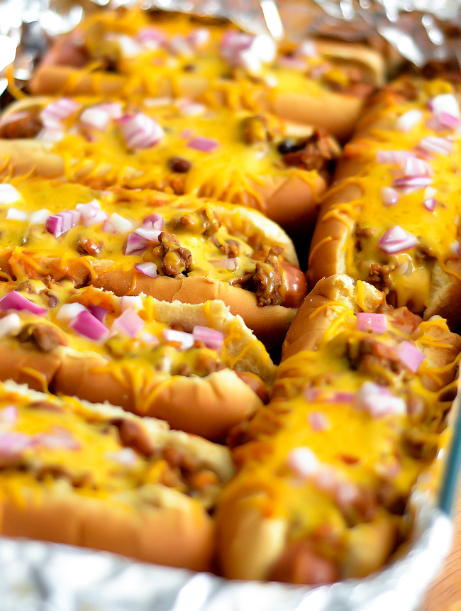

Chili Hot Dogs

Description
Hot dogs in buns are topped with HORMEL® Chili with Beans and shredded Cheddar cheese then baked until piping hot.
Ingredients
- The Unseperable Duo
- 6 hot dogs
- 6 split hot dog buns
- Extras
- 1 (15 ounce) can HORMEL® Chili With Beans
- 1 cup shredded Cheddar cheese
Steps
- Heat oven to 350 degrees F. Grease 9 x 13-inch baking dish.
- Heat hot dogs according to package directions. Arrange hot dog buns in baking dish, cut side up. Place hot dogs in buns. Top with chili. Sprinkle with cheese. Tent pan with foil.
- Bake 15 to 20 minutes or until hot and cheese is melted.